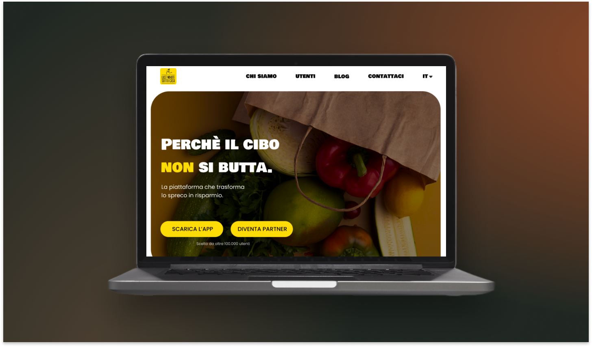

UX research / e-commerce
Ecodream
UX research e redesign di un e-commerce sostenibile.
Progetto esperienze e interfacce digitali con attenzione ai dettagli.
Uno spazio da attraversare.
Il quadro diventa una porta di ingresso
Dal paesaggio ai progetti.
Ho scelto una scena ispirata alla rilettura della Nascita di Venere di José Manuel Ballester perché mi interessava partire da un paesaggio svuotato dai personaggi, dove resta solo l’ambiente.
Il portfolio nasce da qui: non una semplice vetrina, ma uno spazio in cui entrare, orientarsi e scoprire i progetti con calma.
About
Per anni ho lavorato come hostess per eventi, a contatto con persone, spazi e situazioni diverse. Mi ha insegnato a osservare quello che succede davvero: come ci si orienta, cosa crea distanza, cosa invece mette a proprio agio.
Nel design porto questa attenzione insieme alla mia parte più visiva e manuale. Mi interessano le interfacce, ma anche le immagini, gli oggetti, i dettagli e il modo in cui una cosa viene presentata.

UX research / e-commerce
UX research e redesign di un e-commerce sostenibile.

Landing page / UI
Redesign di una landing page per rendere più chiaro il valore del servizio.

Editoriale / contenuti
Concept editoriale e UI writing.
Brand identity / UI concept
Brand identity e UI concept per un’app di meditazione.
Qui raccolgo le aree in cui posso essere utile oggi, mentre continuo a crescere.
Ricerca, organizzazione delle informazioni e progettazione di interfacce.
Identità visive, composizione e cura dei dettagli.
Microcopy e presentazioni che aiutano a comunicare meglio un progetto.